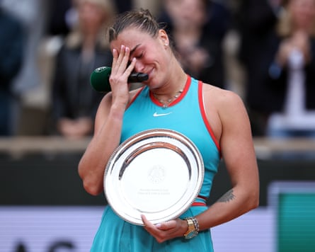
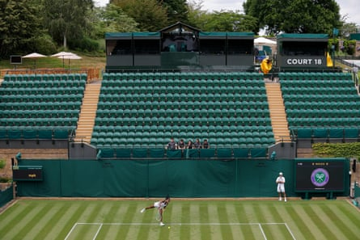

Winning Wimbledon is hard enough to do when everything’s going swimmingly off the court as well as on it. When something is rumbling beneath the surface, focusing on the job in hand can be almost impossible.
So it was perhaps no surprise that Aryna Sabalenka chose to clear the air with Coco Gauff after the world No 1’s harsh words in the wake of her painful loss to the American in the final of the French Open this month.
Claiming it was “the worst final that I ever played”, Sabalenka said she had lost the match rather than Gauff winning it and, most insultingly of all, that had Iga Swiatek, the four-time French Open champion, beaten her in the semi-finals at Roland Garros, she would also have beaten Gauff in the final.
Sabalenka apologised to Gauff privately and here this week, in true Sabalenka style, it was repeated by means of a TikTok dance, with the caption: “TikTok dances always had a way of bringing people together.” But the détente was also wise for both women as they each try to win Wimbledon for the first time.
Aryna Sabalenka reacts after losing to Coco Gauff in the final at Roland Garros, ‘the worst I ever played’.Photograph: Christophe Petit-Tesson/EPA-EFE
“I did what I did. I get what I deserve, I believe,” Sabalenka said, referring to the media fallout “I didn’t want to offend her. I was just completely upset with myself and emotions got over me. I completely lost it. Of course she’s got my respect. She knows it. I’m happy that she was, like: ‘Yeah, it’s all good, don’t worry.’”
Gauff, who can become the first woman since Serena Williams in 2015 to win the French Open and Wimbledon in the same year, was happy to move on. “Obviously some people were critiquing what she said in the speech,” Gauff said. “I didn’t really care about any of that because I know how it feels. I understand what she was trying to say. It was a terrible condition day. I don’t think I was playing well either, so I understood where she was coming from with that. Some of the stuff that was said in the press, I think I was a bit more surprised about.
“I’m not someone to hold a grudge. I was talking to my circle about it. I was like: ‘If she apologises I will be fine and we’ll move on.’ She did and she did again when I saw her before we practised [together, at Wimbledon]. It’s water under the bridge. I know Aryna. We got along pretty well anyways before all that happened. It wasn’t very hard to accept that apology.”
Coco Gauff during a practice session on Court 18 at Wimbledon.Photograph: Tom Jenkins/The Guardian
As the top two seeds at Wimbledon, Sabalenka and Gauff could find themselves on either side of the net in the final. “I would love to face Coco,” Sabalenka said. “Hopefully I will win, then it doesn’t matter what I’m going to say. But I don’t want to lose to show that, guys, I learned the lesson. In this [way] maybe I don’t want to see Coco if I make it to the finals. But if she’s going to be there, I’m happy because I want to get revenge.”
Theirs is not the only spat that has had tongues wagging lately. More than two months after Harriet Dart asked the umpire in Rouen to tell her opponent, Lois Boisson, to put on some deodorant because she “smells really bad”, the Briton had to answer more questions about the incident on Saturday, admitting the adverse publicity had hurt.
“I’d be lying if [I said] it didn’t affect me a little bit,” Dart said, alluding to “difficulties” off court. “We all make mistakes and I just tried to look forward. I don’t know why we’re still talking about this, it’s been months now. I feel like I answered a lot of the questions that were asked of me and that’s it. I really just want to put it behind me.”